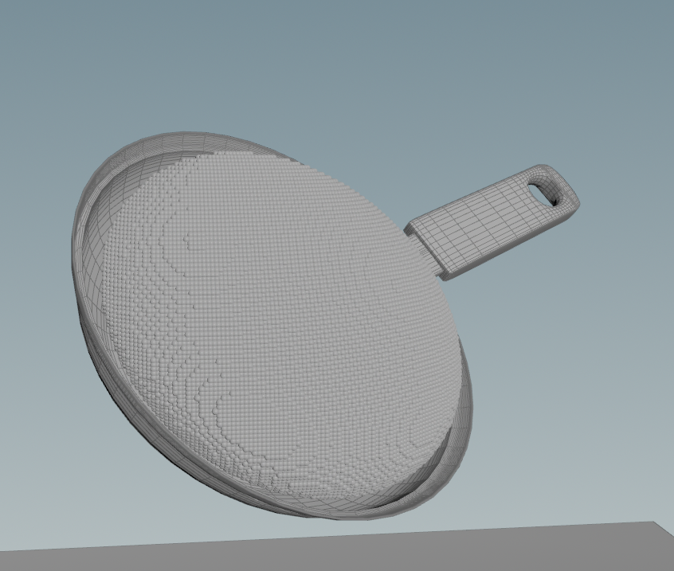
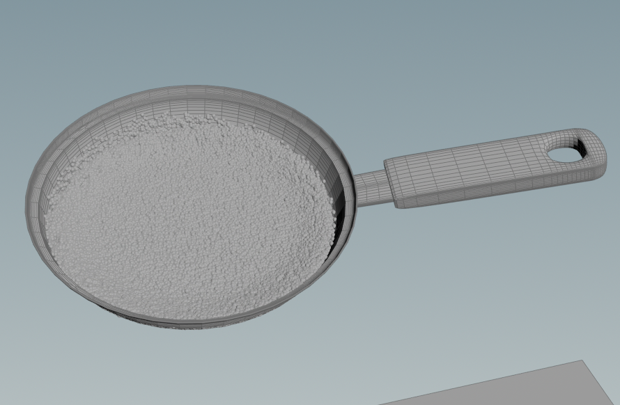
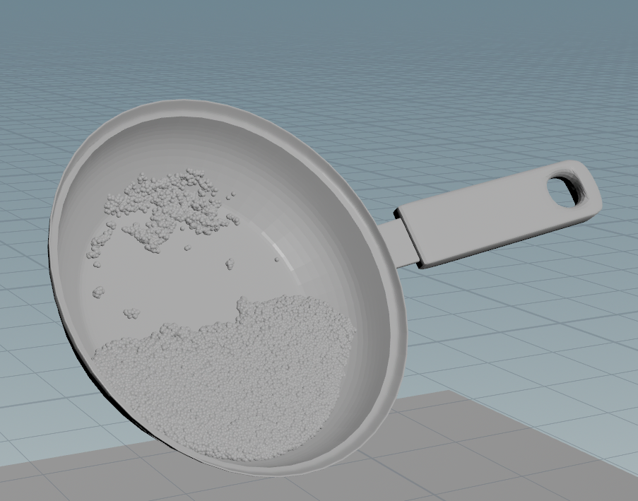
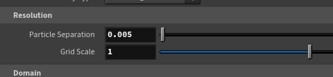
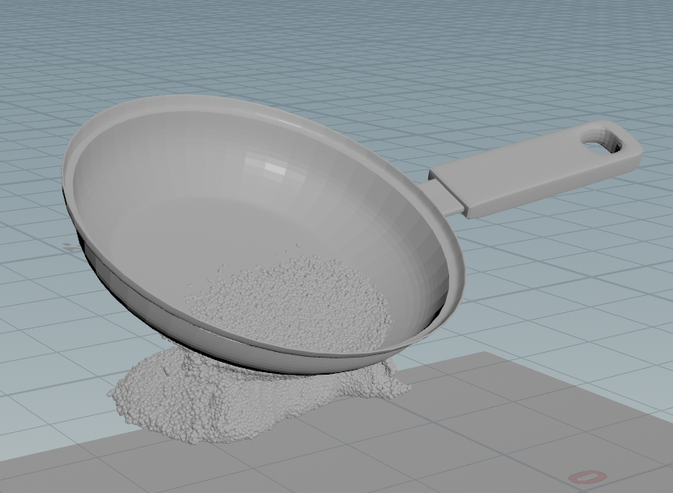
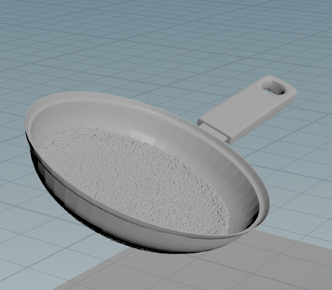
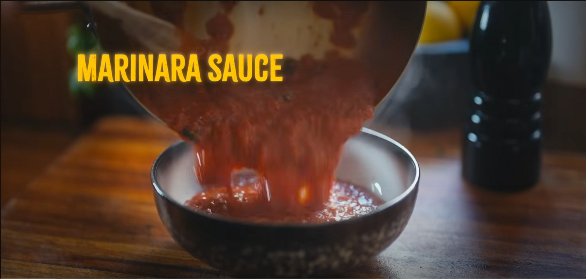

← 部落格 × VSFX728
待办事项：


第 8 周
VSFX 728 － 第 8 周
大家好，这是我 VSFX 728 部落格的期末专案！
5 月 10 日
待办事项：
1. 依照参考图设定场景摆放
2. 简单测试番茄酱倒出的效果（包含黏稠度与动画的真实感）
这周我会开始用 MPM 测试番茄酱倒出的效果。
一开始，我尝试配合锅子的角度，把一个球形的 MPM 来源丢进锅里。但我发现很难控制，球体常常没掉到正确的位置，尤其碰不到锅子内侧的上半部。

所以我改成一开始把锅子平放，从上方倒入液体，之后再为锅子的移动做动画。这个做法不只更容易控制，也更真实，因为符合现实中倒液体的方式。


问题排解：
这周遇到的问题是：锅子一开始移动，粒子就会穿过它。
我调整了两件事。首先，我把碰撞体类型从 Animated (Rigid) 改成 Animated (Deforming)，也查了文件了解两者的差别。因为 Animated (Deforming) 每一格都会重建形状和速度，所以计算时间比较长。
虽然旋转的物体通常用 Animated (Rigid) 就够了，但在我的情况下，它没办法阻止粒子穿过去，只有 Animated (Deforming) 能稳定运作。我认为这是因为锅子转得很快，而且粒子非常贴近碰撞表面。
另一个调整是修改 Particle Separation 和 Grid Scale 以提高解析度。Particle Separation 控制粒子的密度，Grid Scale 影响背景网格的精细度。降低这两个数值让模拟更细致也更稳定。



之前
之后
这是我依照参考图搭建的场景。
